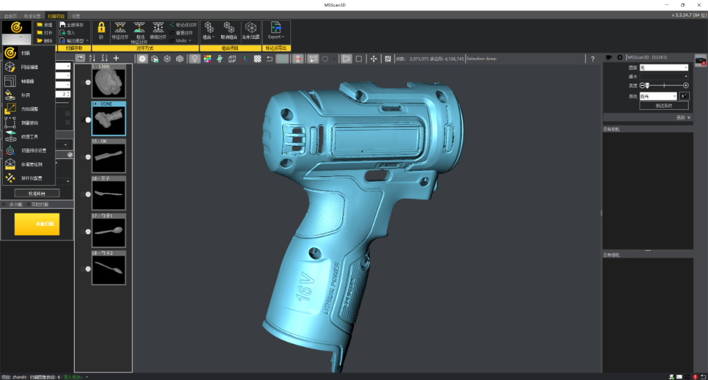
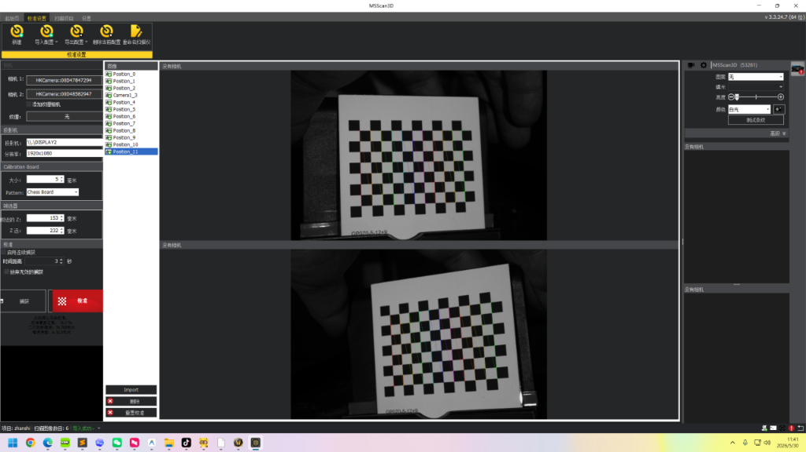
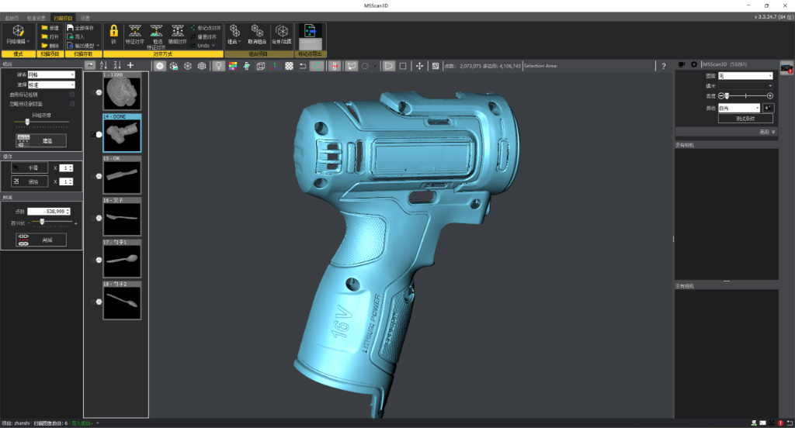

硬件插线与自动联机
将两台 USB3 工业相机和投影仪（家用 HDMI 或硬触发光机）连接至电脑。
傻瓜式联机：相机和投影仪插在电脑上，打开软件即可全自动识别并完成联机！软件安装大包内已集成海康、迈德威视等品牌相机的全套官方驱动，不需要去官网到处寻找，插电即用！
搭载全球先进的自研标定算法软件与超清双目相机硬件，为您带来精度高达 5 微米至 80 微米的极限级三维重建体验。傻瓜式插电即用，让三维扫描变得极其简单！

以大厂发布会 PPT 的硬核视角，深度剖析并展示 MSscan3D 核心标定、重建、剖切与三维检测黑科技：
官方自研团队亲自动手演示！B站合集云端智能同步，手把手带您吃透实操细节！
这是我们的置顶核心高阶教程！详细展示了在 MSscan3D 系统中，当您完成硬触发硬件安装后，软件是如何通过空间点对齐算法，瞬间把多个扫描面融合拼装成一个天衣无缝的高稠密 3D 模型的。这是决定三维扫描仪拼接精度的灵魂所在！
本站内置轻量 GLB 演示模型，保证网页稳定展示；完整高精 STL/OBJ 扫描数据可通过淘宝或旺旺联系获取
傻瓜式操作流程，最快 5 分钟轻松搞定三维重建：
将两台 USB3 工业相机和投影仪（家用 HDMI 或硬触发光机）连接至电脑。
在系统配置中选择您要加载的投影仪类型，一键投射编码条纹到物体表面。
将高精度标定板放置在镜头前，控制投影仪投影圆点或棋盘格，自动计算标定误差。
将待扫物体放置于电动旋转台上，在软件中设置每次旋转的角度（如每次旋转 45°）。
在软件内置的流畅 3D 视窗中放大、旋转、多视角查看扫好的 3D 模型。
.STL 或 .OBJ 标准文件，直接拖入 3D 打印切片软件或画图软件！
所有程序均存放在 GitHub 官方 Releases 极速托管服务器中，拒绝套路，一键直达
最新稳定版：v3.3.22.12
包含 MSscan3D 扫描系统主程序、旋转台插件以及高精度测试样本。一键式傻瓜安装，支持 Windows 10/11 64位系统。
无需去官网寻找驱动！本软件已完美集成了海康相机驱动，双击安装软件大包即可自动安装适配相机驱动，插上即可完美识别。
无需去官网寻找驱动！迈德威视控制平台的相机底层驱动同样已集成于本安装包内，小白也能无痛上手，即插即用。
15 张混合光栅编码条纹 BMP 图像及标定配置 ini，已完美内置于软件安装目录下！安装完主程序后，即可直接在安装目录下找到，绝不繁琐！
展示自主研发的高精度扫描硬件模组、实时扫描工作流，以及多领域扫描重建案例成果
搭载高精度微步控制电动旋转台与全金属升降光学传感器横梁，结构精密稳重。自研系统开机即现“中国智造 走向世界”欢迎视窗，支持双目相机与投影仪全自动自适应，是您工作室与生产线的硬核精度担当！

展示了自研算法对高精度标定板进行双目相机的实时几何校准。系统基于海康官方底层接口（HKCamera）实现微秒级全局同步触发，全自动提取标定格交点的特征参数并计算空间标定误差，从物理层确保扫描重建精度达到极致的 5 微米！

展示了对高难度精密锂电钻外壳进行三维重建的最终三角网格成品。模型表面光滑锐利，微小的“16V”、“LITHIUM POWER”等文字特征立体饱满、毫无噪点毛刺，直接输出通用的 .STL/.OBJ 格式，100% 满足逆向工程与精密检测！
淘宝直营店提供全套精选硬件配件包，免去您到处拼凑采购、调试不兼容的痛苦，插电即可直接开扫！
包含两台高帧率工业相机及特制专业定焦镜头。镜头出厂前已调校好焦距和光圈，插上USB3.0接口即可直接识别，免去复杂的手动调焦痛苦。
高亮度家用/工业两用结构光投影光机，投射清晰高对比度条纹。包含原装 HDMI 视频线、电源适配器与专用转接配件。
全自动高精度微步控制电动转台，软件直接控制旋转角度。转速平稳无晃动，防止扫描物体在旋转过程中产生微小移位导致拼接报错。
特制高硬度双面高精度校准板。一键完成精度校准，是让您的扫描重建达到 5微米至80微米 极限级工业精度的关键核心！
承重稳固三脚架，搭配特制铝合金多孔位相机连接横梁与角度转换器。保证相机与投影仪安装极其牢固，防止轻微晃动导致扫描报错。
最核心增值礼包！官方自研软件开发者团队为您提供 1 对 1 远程视频联机调试指导，提供专属 VIP 技术群，软件终身免费升级！
外形尺寸完全一致，针对不同预算与精度需求提供两档精选硬件配置：
如果您觉得只玩软件不过瘾，想拥有一台真正属于自己的高精度桌面三维扫描仪，您可以直接前往我的淘宝官方个人直营店。我们提供全套硬件模组（包含两台工业相机、专业镜头、高精度标定板、电动旋转台与特制支架）。
无论您是软件使用者，还是硬件购买者，我都非常欢迎您和我交流结构光扫描算法与 3D 打印技术！
提示：淘宝购买的用户，请直接在旺旺上联系我，我会拉您进高精度三维扫描 VIP 技术交流群，获取最新的开发补丁 and 免费 3D 扫描数据源！